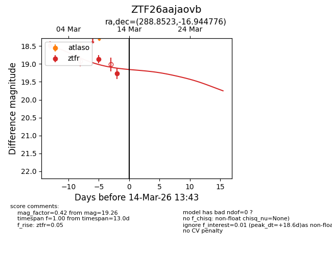
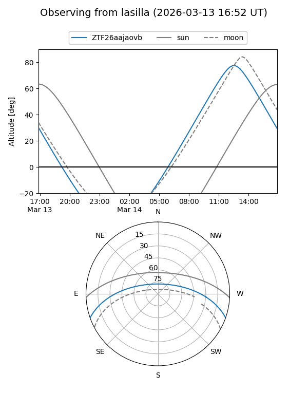
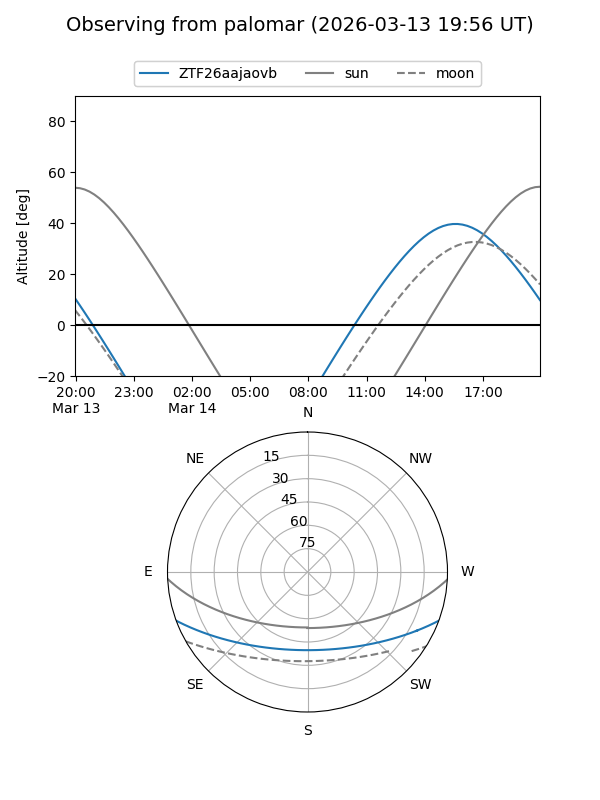
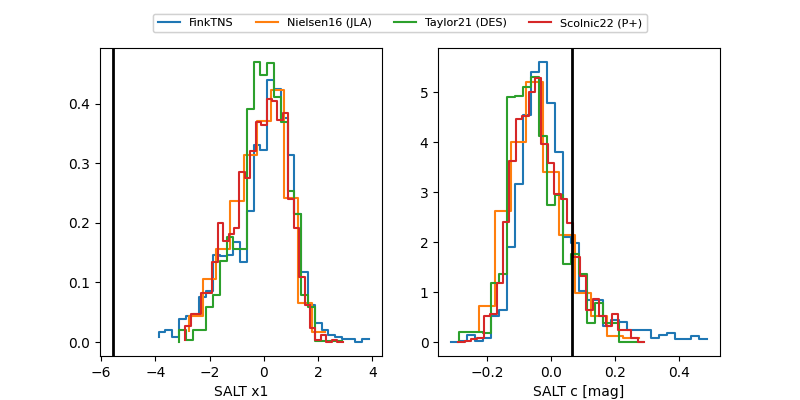

ZTF26aajaovb
Target ZTF26aajaovb at 2026-03-14 13:47
Aliases and brokers:
FINK: link
Lasair: link
ALeRCE: link
alt names
ZTF26aajaovb (ztf,fink_ztf)
Coordinates:
equatorial (ra, dec) = 288.8523,-16.94478
equatorial (HMS+DMS) = 19:15:24.56,-16:56:41.19
galactic (l, b) = (20.2635,-12.81366)
Flags:
Photometry:
last ztfr=19.26
3 ztfr detections
Lightcurve

Visibility


Additional plots
